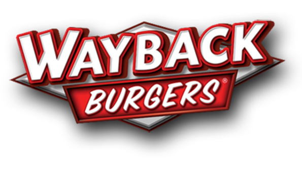
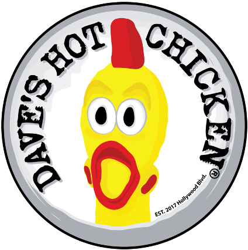
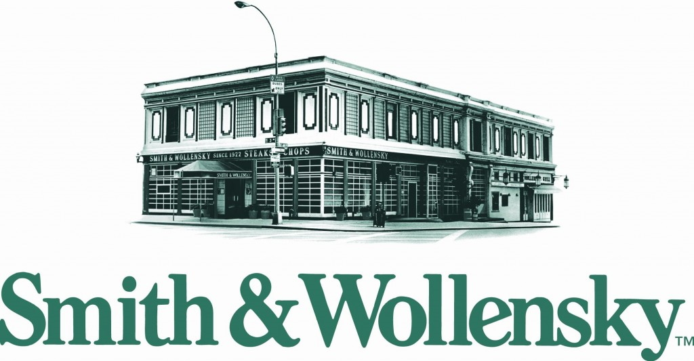

Brand-spec literacy
Inspire Brands, Dunkin', Jersey Mike's, Wayback, Works Cafe, Yella, Zo. Seven prototype books in muscle memory. The brand audit clears on first walk because we built to drawing, not to what fits.
200+ restaurant projects across Inspire Brands, Dunkin', Jersey Mike's, The Works Cafe, Wayback Burger, Yella on the Water, and Zo Greek Cuisine. New builds, brand remodels, fast-track openings. We know the spec before we bid and we hold the open date.



Inspire Brands, Dunkin', Jersey Mike's, Wayback, Works Cafe, Yella, Zo. Seven prototype books in muscle memory. The brand audit clears on first walk because we built to drawing, not to what fits.
Every closed day is rent, payroll, and lost royalties. Target-open is the contract. Variance log signed before mobilization. We price the calendar, then we hold it.
Mark and Nick are on the phone, on jobsites, and on the variance log. Not a regional PM. We manage your money the way a franchisee manages a store — because most of our clients are franchisees.
Call Richard French, Jason Pino, or Philip Dietrich. A brand founder and two QSR franchisees on the record. Cheaper bidders don't have this bench — and the names are real.
Full ground-up construction on raw pads and infill sites. Site, foundation, shell, MEP, FF&E. The Works Cafe Westford was a ground-up open delivered to the brand calendar.
Image refreshes and brand-spec rolls. Dunkin' next-gen, Jersey Mike's interior packages, full image conversions. Phased to keep an existing store running where the brand allows.
Tenant improvement and second-generation conversions on a brand calendar. Permit-to-open windows compressed to the schedule the operator is staffing against, not the one the GC would prefer.
Hood and suppression upgrades, line reconfigurations, walk-in replacements, prep room buildouts. Coordinated against operating hours, brand inspections, and health-department sign-offs.
Drive-thru lane additions, dual-lane upgrades, exterior packages and signage rolls. Civil, paving, OCS, and brand-spec menu hardware sequenced around store operations.
Site walks, feasibility, brand-spec compliance review, budget validation. The work that prevents the change-order surprises that happen when a cheaper bid is learning your brand on your jobsite.
The Westford team at Repro knew the brand before we walked them through it — that's not normal, and it changes how a project runs. Mark and Nick treated this build the way I'd treat one of my own stores. We opened on the date we put on the calendar, the store passed brand on first walk, and the operator inherited a clean room.
[TESTIMONIAL TO BE GATHERED] When a Dunkin' opens late, every closed day is real money out of my pocket. Repro built to the calendar and to the spec — that's what I pay for.
[TESTIMONIAL TO BE GATHERED] Jersey Mike's brand spec is unforgiving on the line and at the counter. Repro built it once, built it right, and was on the phone every time I needed them.
200+ restaurant projects across Inspire Brands, Dunkin' (Jason Pino's franchise group), Jersey Mike's (Philip Dietrich's franchise group), The Works Cafe (Richard French, founder & CEO), Wayback Burger, Yella on the Water, and Zo Greek Cuisine. Most builds sit in Greater Boston, the North Shore, and across New England.
Yes. The target-open date drives the schedule from kickoff. We sign off the variance log before mobilization, sequence trades against staffing and marketing dates, and protect the open date as the contract — not the wishful thinking. Every closed day in a leased shell is rent, payroll, and lost royalties, and we price the calendar accordingly.
Brand-spec literacy is the floor, not the upsell. We've cycled through the prototype books for Inspire Brands, Dunkin', Jersey Mike's, Wayback Burger, The Works Cafe, Yella, and Zo. We build to drawing — not to "what fits" — so the brand audit clears on first walk and there's no rework after the inspector leaves.
The cheaper bid usually learns your brand on your job. That shows up as change orders, re-inspections, and brand-flag rejections on the back end — the savings disappear by punch. Repro arrives knowing the spec, the brand's preferred subs, and the inspection sequence in your municipality. The number on the bid is closer to the number you actually pay.
Yes — phased work for active stores is part of the QSR practice. We sequence demo, mechanical, and finish work around operating hours, coordinate with the brand's site team, and protect customer-facing zones. Night work and weekend shifts are normal when the store can't go dark.
Repro Construction Services LLC is headquartered at 525 Lowell St, Peabody, MA 01960. Restaurant work runs through all of New England — Massachusetts, New Hampshire, Rhode Island, Connecticut, Vermont, and Maine — with concentration in Greater Boston, the North Shore, and along the I-93 / I-95 corridors.